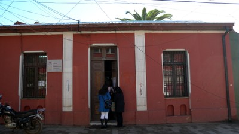
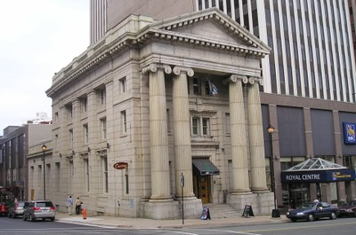

Masonry unit, unknown [MUN99]
It is clear that the structural material is masonry, but the type of masonry is unknown. The build-up of the wall may be hidden, as in the case of a plastered wall, or information about it is unavailable.


Walls in masonry buildings are usually covered by plaster at the exterior and it is difficult to identify type of masonry unit used in such cases - like in the case of the masonry building in Constitution, Chile shown in the top photo; however, a closer inspection of the walls and the building interior revealed the adobe construction, as shown in the bottom photo (S. Brzev)

This is likely a masonry building, but the type of masonry unit is not known, Halifax, Canada (S. Brzev)